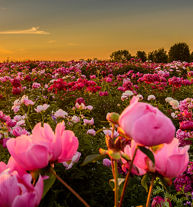

红孩儿
400-650-0612
专家支招Expert Weapon
妈妈课堂
Red baby profile营养健康
Peony culture美食分享
Peony culture

品牌活动
The first Peony Cultural Festival
牡丹是芍药科、芍药属植物，为多年生落叶小灌木。花色泽艳丽，玉笑珠香，风流潇洒，富丽堂皇，素有“花中之王”的美誉。在栽培类型中，主要根据花的颜色，可分成上百个品种。
品牌活动
The first Peony Cultural Festival
牡丹是芍药科、芍药属植物，为多年生落叶小灌木。花色泽艳丽，玉笑珠香，风流潇洒，富丽堂皇，素有“花中之王”的美誉。在栽培类型中，主要根据花的颜色，可分成上百个品种。
品牌活动
The first Peony Cultural Festival
牡丹是芍药科、芍药属植物，为多年生落叶小灌木。花色泽艳丽，玉笑珠香，风流潇洒，富丽堂皇，素有“花中之王”的美誉。在栽培类型中，主要根据花的颜色，可分成上百个品种。
品牌活动
The first Peony Cultural Festival
牡丹是芍药科、芍药属植物，为多年生落叶小灌木。花色泽艳丽，玉笑珠香，风流潇洒，富丽堂皇，素有“花中之王”的美誉。在栽培类型中，主要根据花的颜色，可分成上百个品种。
品牌活动
The first Peony Cultural Festival
牡丹是芍药科、芍药属植物，为多年生落叶小灌木。花色泽艳丽，玉笑珠香，风流潇洒，富丽堂皇，素有“花中之王”的美誉。在栽培类型中，主要根据花的颜色，可分成上百个品种。
品牌活动
The first Peony Cultural Festival
牡丹是芍药科、芍药属植物，为多年生落叶小灌木。花色泽艳丽，玉笑珠香，风流潇洒，富丽堂皇，素有“花中之王”的美誉。在栽培类型中，主要根据花的颜色，可分成上百个品种。
联系我们Contact us
北京百瑞众康农业科技发展有限公司
总部邮编：100000
总部地址：北京星光影视园新媒体大厦17号楼7层
总部电话：400-650-8612
- 微商城
二维码
- 公众号
二维码 - 公司网站
二维码
“红孩儿”旗舰店
北京·翠微-凯德Mall
地址：海淀区翠微路12号凯德Mall三层K01
地址：海淀区翠微路12号凯德Mall三层K01
北京·大兴-绿地缤纷城
地址：大兴区绿地缤纷城二期二层-ZD03
地址：大兴区绿地缤纷城二期二层-ZD03
北京·丰科-万达广场
地址：丰科路6号院二层主-2F-17
地址：丰科路6号院二层主-2F-17
内蒙古·北京华联
包头市青山区正翔国际北京华联负一层
包头市青山区正翔国际北京华联负一层